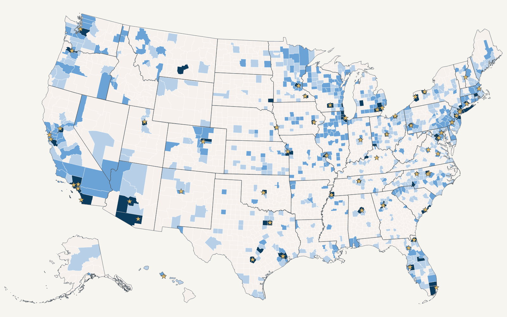

Key findings · residents 55 and older · data as of
Cancer clinical trials are close for most Americans and out of reach for millions
million Americans aged 55 and older (%) live more than an hour's drive from a reasonable choice of recruiting cancer treatment trials; million have none within 60 road-miles. In rural counties the share without a reasonable choice is %; in metro counties it is %.

Five numbers
%
of Americans 55+ have fewer than 20 recruiting trials within 60 road-miles of home
million people
%
have no recruiting trial at all within 60 road-miles
million people
%
live more than 60 road-miles from a county with a broad menu of trials (100 or more)
% live more than 120 road-miles away
miles
median road distance to the nearest NCI-designated cancer center
% are more than 60 road-miles from one
states
have no county with a broad menu of trials
congressional districts where every resident 55+ is more than 60 road-miles from one
Distances are shortest driving routes on the highway network from each census tract's population center, weighted by residents 55 and older. How it was measured.
The gap is rural
The % of Americans 55 and older who live in nonmetro counties are times as likely as metro residents to have fewer than 20 trials within an hour's drive, and their median distance to an NCI-designated cancer center is road-miles, against in metro counties.
Access to recruiting cancer trials, metro vs nonmetro counties
Share of residents 55 and older · USDA Rural-Urban Continuum Codes 2023 (metro 1–3, nonmetro 4–9)
Show as a table
Fifteen states have no county with a broad menu of trials
A broad menu, ASCO's term for a county with at least 100 recruiting trials, exists in counties nationally. have none. The chart ranks every state by the share of residents 55 and older with fewer than 20 recruiting trials within 60 road-miles; click a state to open it on the map.
Residents 55 and older with fewer than 20 recruiting trials within 60 road-miles, by state
Percent of residents 55+ · ◇ marks a state with no broad-menu county
Show as a table
Congressional districts with the least access
Share of residents 55+ with fewer than 20 trials within 60 road-miles, . Every district has a page with its own numbers, cosponsor status and a printable brief.
Where cancer rates are high and trials are far
counties combine an above-median cancer incidence rate with at least half of their residents 55+ having fewer than 20 trials within 60 road-miles. They are home to residents 55 and older and about new cancer diagnoses a year. Incidence and access are two separate published measures set side by side, never combined into a score.
What would change this
Distance is a cost: fuel, lodging, days away from work and family, often for a year or more of visits. Two bills in the 119th Congress address that cost directly. The Clinical Trial Modernization Act would let trial sponsors cover participants' travel, lodging and cost-sharing, exempt free digital health tools that enable remote participation from anti-kickback rules, exclude trial payments from taxable income, and fund outreach and recruitment in underserved and rural communities. The map shows, for every district and state, whether its members have signed on.
Cosponsor lists from the Library of Congress bill-status feed as of . Cosponsorship is one signal of a member's position, not a vote; verify on congress.gov before citing.
How it was measured
- Trials. Every interventional cancer treatment trial listed as Recruiting on ClinicalTrials.gov with a US site and open to at least one patient aged 55 or older: trials at registry-listed facilities on . Refreshed weekly.
- People. Residents 55 and older in each of census tracts (ACS 2023 5-year), located at the tract's population center, so distances are measured from where people live rather than from county boundaries.
- Roads. Shortest routes on the Census Bureau's primary and secondary road network for all 50 states and DC, checked against published city-pair driving distances (mean difference %).
- Access. For each tract, the number of distinct trials with a recruiting site within 30, 60 and 120 road-miles; the road distance to the nearest county with 20 or 100 trials and to the nearest of NCI-designated treating centers. District, state and national figures weight tracts by residents 55+.
- Limits. Counts are of trials, not of trials a given patient is eligible for. Registry status lags real enrollment. Sites are located by ZIP code. Districts are the ; several states have redrawn for 2026.
Full methods, validation and every data file: Methods & data · GitHub repository.
About and how to cite
The Cancer Trial Access Map was built by Neha Agrawal, MD, a medical oncologist, to put road-distance access to cancer clinical trials in front of the people who can change it: patients and navigators, congressional offices, and researchers. It is open source; the code, data and validation reports are public.